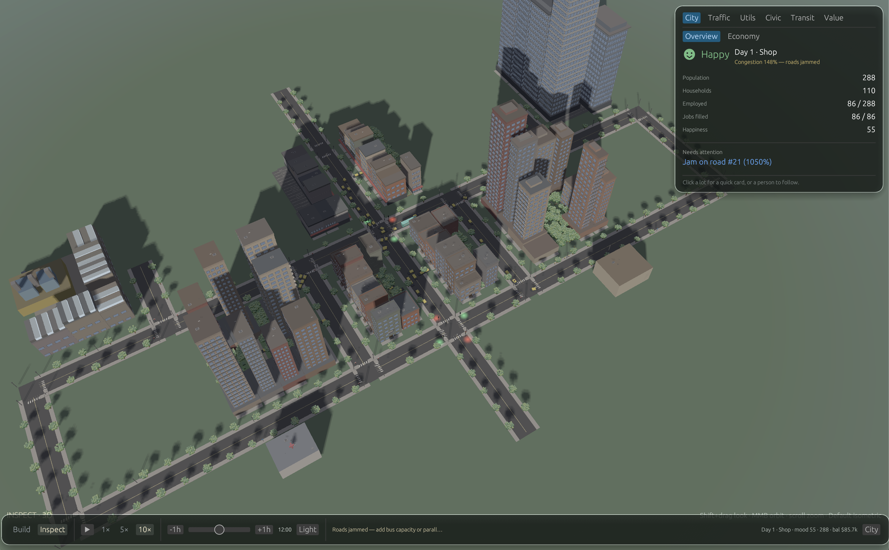
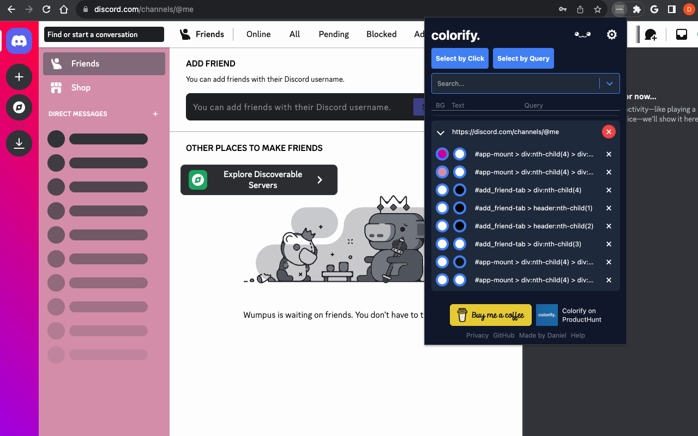
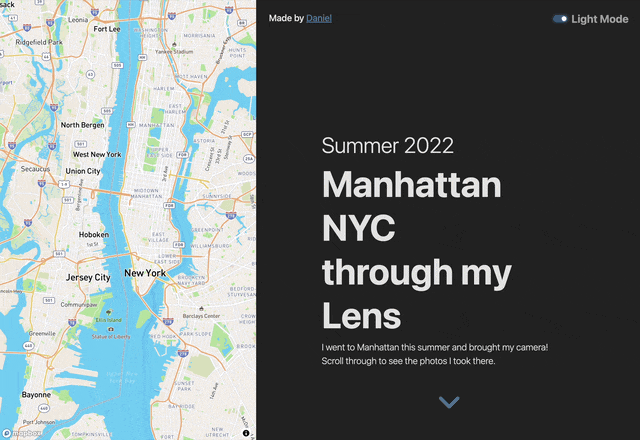
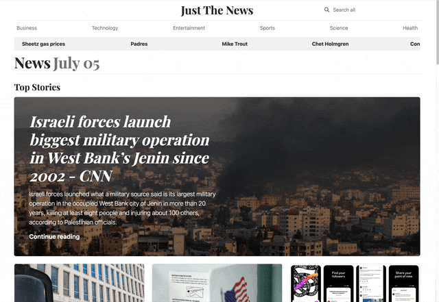

Daniel Yamakov
Software Engineer II @ SpaceX
MS Computer Science @ Georgia Tech
About
I'm a software engineer at SpaceX, working on scheduling software for Starship production and launch. I'm also completing my Master's in Computer Science online at Georgia Institute of Technology. I got my BS in Electrical and Computer Engineering at The University of Texas at Austin.
Experience
-
SpaceXJul 2024 - Present
-
Software Engineer II, Production and Launch OperationsJun 2026 - Present
Cape Canaveral, Florida
Building the next generation of Starship maintenance scheduling and launch operations software
-
Software Engineer II, Starship ProductionAug 2025 - May 2026
Starbase, Texas
Scaled the production scheduler to 10,000+ weekly sessions across sites and deployed across the factory floor in Starbase, Texas.
-
Software Engineer I, Starship ProductionJul 2024 - Aug 2025
Starbase, Texas
Built the production scheduler that replaced Smartsheet and cut scheduling from weeks to days.
-
-
Software Engineer Intern at Hewlett Packard EnterpriseMay 2023 - Jan 2024
Houston, Texas
-
AI/ML Engineer Intern at State StreetJan 2023 - May 2023
Austin, Texas
-
Commercial Analyst Intern at Talen EnergyJun 2022 - Aug 2022
Houston, Texas
Education
-
MS Computer Science2024 - Present
Georgia Institute of Technology
-
BS Electrical and Computer Engineering2021 - 2024
The University of Texas at Austin
Projects
-
Parcels [Devlog]Oct 25, 2026
A city builder in the works. The goal is realism, 60 FPS, and support for Metro-level planning.

-
colorify.Chrome
An open-source MIT-licensed browser extension designed to modify the look of any web element, anywhere. Available for Chrome.

-
spotify-nextNext.js
A refreshed Spotify client built with Next.js. Users can login with their Spotify account and access their playlists, saved songs, and more.
Spotify API requires users to be added manually in dev mode. Please contact me for access.

-
NYC FolioFlask
My camera and Manhattan's touristy spots, bustling streets, and incredible architecture. Built with Python and Flask.
The app might take a few seconds to load.

-
Just The NewsFlask
A real-time news parser built with Python and Flask. Users can search for news articles and view the latest headlines.
The app might take a few seconds to load.

-
Lite NotesFlask
A lightweight notes web app built with Python and Flask. Users can create, edit, and delete notes.
The app might take a few seconds to load.

-
ToolioNext.js
An example lightweight project management platform for developers to manage project resources. Built with Next.js 14, MongoDB, and Material Tailwind.